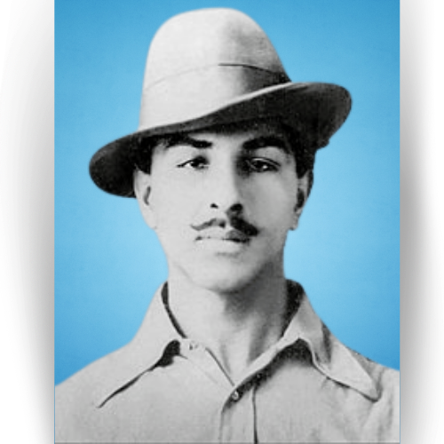

Full Name: Bhagat Singh
Born: 27 September 1907 Banga, Punjab, British India (Now in Punjab, Pakistan)
Died: 23 March 1931 Central Jail, Lahore, Punjab, British India (Now in Punjab,
Pakistan)
Father's Name: Sardar Kishan Singh
Mother's Name: Vidyavati
Cause of death: Execution by hanging
Other name: Shaheed-e-Azam